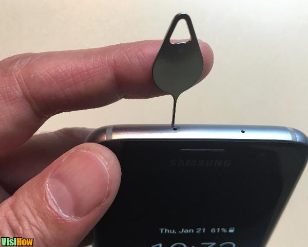
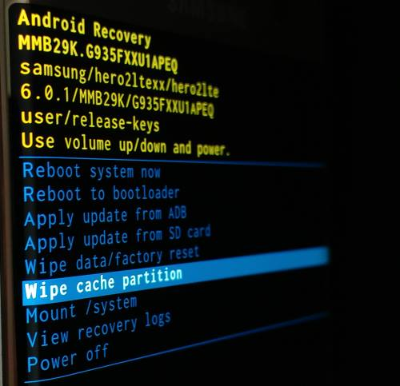

<!--
@license
Copyright (c) 2016 The Polymer Project Authors. All rights reserved.
This code may only be used under the BSD style license found at http://polymer.github.io/LICENSE.txt
The complete set of authors may be found at http://polymer.github.io/AUTHORS.txt
The complete set of contributors may be found at http://polymer.github.io/CONTRIBUTORS.txt
Code distributed by Google as part of the polymer project is also
subject to an additional IP rights grant found at http://polymer.github.io/PATENTS.txt
-->
<link rel="import" href="../bower_components/polymer/polymer.html">
<link rel="import" href="../pluggins/loader.html">
<link rel="import" href="shared-styles.html">

<dom-module id="my-frps6s7edge">
  <template>
    <style include="shared-styles">
      :host {
        display: block;

        padding: 10px;
      }
    </style>
    
    <div class="center">
        
        <page-title page="Samsung Galaxy S6, S6 Edge, S7, S7 Edge" update="3/1/2017"></page-title>
        <div class="card"><center><p>This works on nearly all the different network varaints.</p></center></div>
        
        <tutorial-step-article number="1" body="Getting the Host Computer Ready." article="If this is your first time doing this, there is some software and drivers you need to install on the host computer."></tutorial-step-article>
        
        <tutorial-step color="#FFCCBC" number="A" body="Install the Samsung Drivers for Mobile."></tutorial-step>
        
        <file-download file_name="Samsung Drivers for Mobile" url="https://drive.google.com/file/d/0B3kAzi4CysvuTjBvaXRoZnY0VmM/view?usp=sharing"></file-download>
        
        <tutorial-step color="#FFCCBC" number="B" body="Install RealTerm: Serial/TCP Terminal software."></tutorial-step>
        
        <file-download file_name="RealTerm" url="https://realterm.sourceforge.io/index.html#downloads_Download"></file-download>
        
        <tutorial-step color="#FFCCBC" number="C" body="Restart the host computer."></tutorial-step>
        
        <tutorial-step-article number="2" body="Getting the Target Device Ready." article="You need to insert an active SIM card into the device. Additionally, you need to properly identify the target's operating system."></tutorial-step-article>
        
        <tutorial-step-article color="#FFCCBC" number="A" body="Inserting the SIM card." article="The Samsung Galaxy S6, S6 Edge, S7, and S7 Edge all have their SIM tray located at the top left corner of the device. The SIM card inserted into the target device must be fully active and able to make calls."></tutorial-step-article>
        
        <center>
        <div class="card">
            <table class="tg" style="width: 100%;">
                <tr>
                    <th style="padding: 0px;"><youtube-video title="How to Insert the SIM Card" video="je2DkGra7pQ"></youtube-video></th>
                    <th></th>
                </tr>
            </table>
        </div>
        </center>
        
        <tutorial-step-article color="#FFCCBC" number="B" body="Identifying properly the operating system." article="To accomplish this you must reboot the device into recovery mode by holding the Volume Up, Home, and Power buttons all at the same time. Once inside the recovery menu the Android version can be found near the top of the screen."></tutorial-step-article>
        
        <center>
        <div class="card">
            <table class="tg" style="width: 100%;">
                <tr>
                    <th style="padding: 0px;"><youtube-video title="How to Enter Recovery Mode" video="abiD7xS2k7w"></youtube-video></th>
                    <th></th>
                </tr>
            </table>
        </div>
        </center>
        
        <tutorial-step color="#FFCCBC" number="C" body="Reboot the target device and join a Wifi network."></tutorial-step>
        
        <tutorial-step-article number="3" body="You are Ready to Exploit the Device." article="Testing this article piece on a page."></tutorial-step-article>
    </div>
  </template>

  <script>
    Polymer({
      is: 'my-frps6s7edge',
    });
  </script>
</dom-module>
